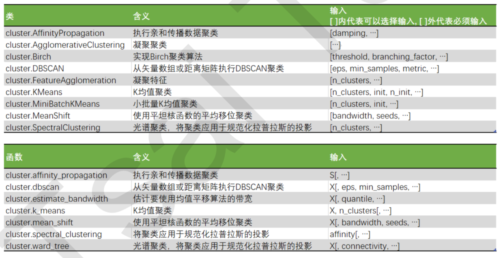

- 聚类算法又叫做“无监督分类”，其目的是将数据划分成有意义或有用的组(或簇)。这种划分可以基于我们的业务 需求或建模需求来完成，也可以单纯地帮助我们探索数据的自然结构和分布。
in sklearn
KMeans聚类算法
KMeans算法将一组N个样本的特征矩阵X划分为K个无交集的簇，直观上来看是簇是一组一组聚集在一起的数据，在一个簇中的数据就认为是同一类。簇就是聚类的结果表现。
簇中所有数据的均值通常被称为这个簇的“质心”(centroids)。在一个二维平面中，一簇数据点的质心的 横坐标就是这一簇数据点的横坐标的均值，质心的纵坐标就是这一簇数据点的纵坐标的均值。同理可推广至高维空间。
流程：- 随机抽取K个样本作为最初的质心 - 开始循环: - 将每个样本点分配到离他们最近的质心，生成K个簇 - 对于每个簇，计算所有被分到该簇的样本点的平均值作为新的质心 - 当质心的位置不再发生变化，迭代停止，聚类完成簇内平方和（Inertia）：
Total Inertia越小，代表每个簇内样本越相似，聚类的效果就越好。因此 KMeans追求的是，求解能够让Inertia最小化的质心。
Inertia是基于欧几里得距离的计算公式得到的。
簇内平方和/整体平方和是KMeans的损失函数。cluster.KMeans (n_clusters=8, init=’k-means++’, n_init=10, max_iter=300, tol=0.0001, precompute_distances=’auto’, verbose=0, random_state=None, copy_x=True, n_jobs=None, algorithm=’auto’)
1
2
3
4
5
6
7
8
9
10from sklearn.cluster import KMeans
n_clusters = 3
# kmean不需要建立模型或者预测数据，因此只要fit就可以查看结果
cluster = KMeans(n_clusters=n_clusters, random_state=0).fit(X)
# 查看聚好的类别，每个样本对应的类
y_pred = cluster.labels_
# 查看质心
centroid = cluster.cluster_centers_
# 查看总距离平方和
inertia = cluster.inertia_参数：
- n_clusters：分的类数模型评估指标
通过衡量簇内差异来衡量聚类的效果，可以通过轮廓系数来判断。- 样本与其自身所在的簇中的其他样本的相似度a，等于样本与同一簇中所有其他点之间的平均距离
- 样本与其他簇中的样本的相似度b，等于样本与下一个最近的簇中得所有点之间的平均距离
单个样本的轮廓系统为：s = (b-a) / max(b,a)
轮廓系数范围是(-1,1)，其中值越接近1表示样本与自己所在的簇中的样本很相似，并且与其他簇中的样本不相似，当样本点与簇外的样本更相似的时候，轮廓系数就为负。当轮廓系数为0时，则代表两个簇中的样本相 似度一致，两个簇本应该是一个簇。
缺点：再凸型函数表现虚高1
2
3
4from sklearn.metrics import silhouette_score
from sklearn.metrics import silhouette_samples
silhouette_score(X,cluster_.labels_) #总数
silhouette_samples(X,y_pred) #每个样本